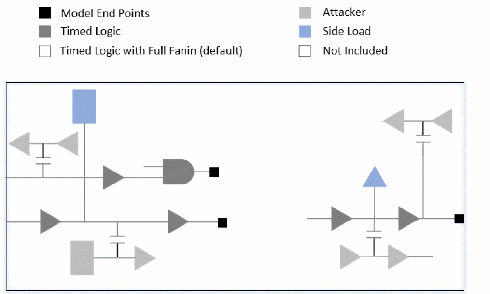
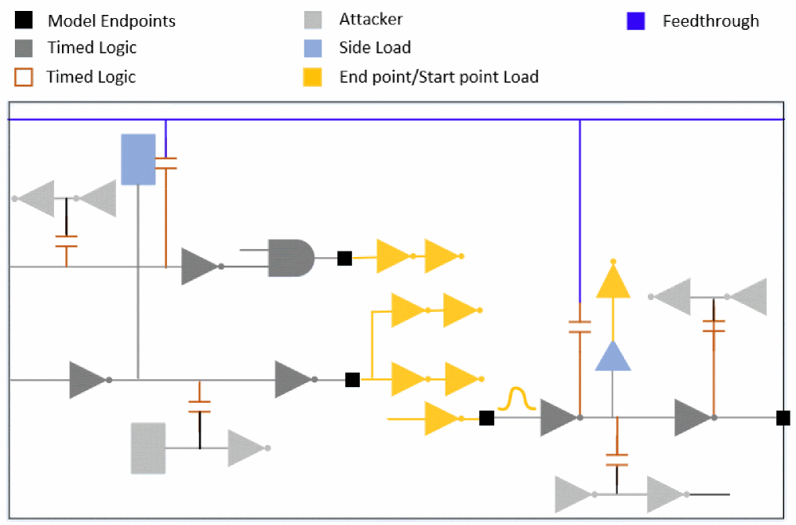

Glitch-Specific Boundary Models
To improve efficiency of glitch-only analysis, a glitch-specific model can be created using the create_glitch_boundary_model command.
For glitch-only analysis, the software will keep N-levels (default is 2 levels) of logic (controlled by the create_glitch_boundary_model -max_stages command parameter) from the boundary along with the RCs connected to any of those nets. If a multi-stage cell is encountered, then the noise will not propagate through the logic and multi-stage cells will be considered as path end or start points.
The following figure shows an example of a netlist saved for a boundary model of a simple block for a maximum of 2 levels of glitch stages.
Figure -17 Saved netlist for a boundary model with 2 levels of glitch stages

If a cell is encountered without any noise model, then it is treated as a single-stage cell for the purpose of logic level tracing. The next stage after the end point is also kept as load so that the slew/waveform can be put on the driver of the net connected to the start point, but is not analyzed when the block is used. The driver stage of the start point is kept as a driver and noise is injected if the cell is single-stage or a buffer. This logic is described below:
- The internal path nets that are SI attackers to the N-level path nets. All the leaf drivers and receiver instances of such nets are also included.
- The receiver instances on the N-level path nets that are not part of the interface logic are included. These side load receivers can occur in the clock network and on the paths from the register to the output port paths.
- The end points are saved to ensure proper loading, but they are not analyzed when the boundary model is used.
- The attacker driver and receiver are saved, but not analyzed when the boundary model is used.
- The analyzed noise on the drivers to the start points is saved and injected when the driver is a single-stage cell or buffer.
- The feedthrough is saved as part of the boundary model.
The following figure illustrates the logic described above:
Figure -18 Glitch-specific boundary model with feedthrough

The glitch correlation between a fully flat higher level run and a higher level run using one or more boundary models is expected to be close. However, the following are some of the factors that can negatively affect the correlation:
- Boundary slews at the block and the top level will not match perfectly, but the expectation from the boundary constraints is that they will be worst case. The differences in slews can cause differences in glitch results.
- User errors in the form of inconsistent SI settings between the block level and the top level.
Glitch Boundary Model Usage
The following command is used to generate a glitch boundary model:
Glitch Boundary Model Contents
The contents of a glitch boundary model are as follows:
- <block>.db: Contains the Verilog files that are equivalent to the block:
- bound_libs.txt:
- context: Context of the boundary model:
- libs
- Partition: Contains the SPEF file and partition information:
Return to top